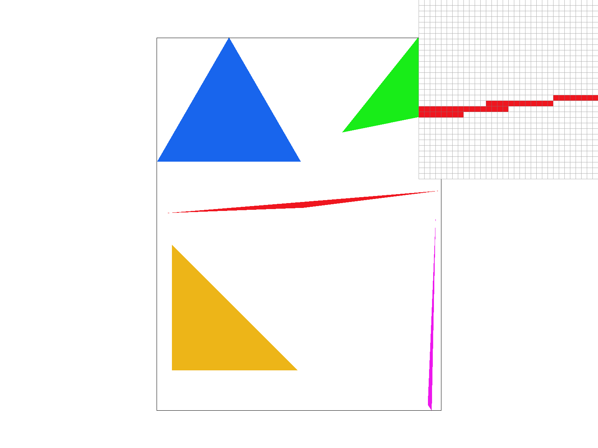
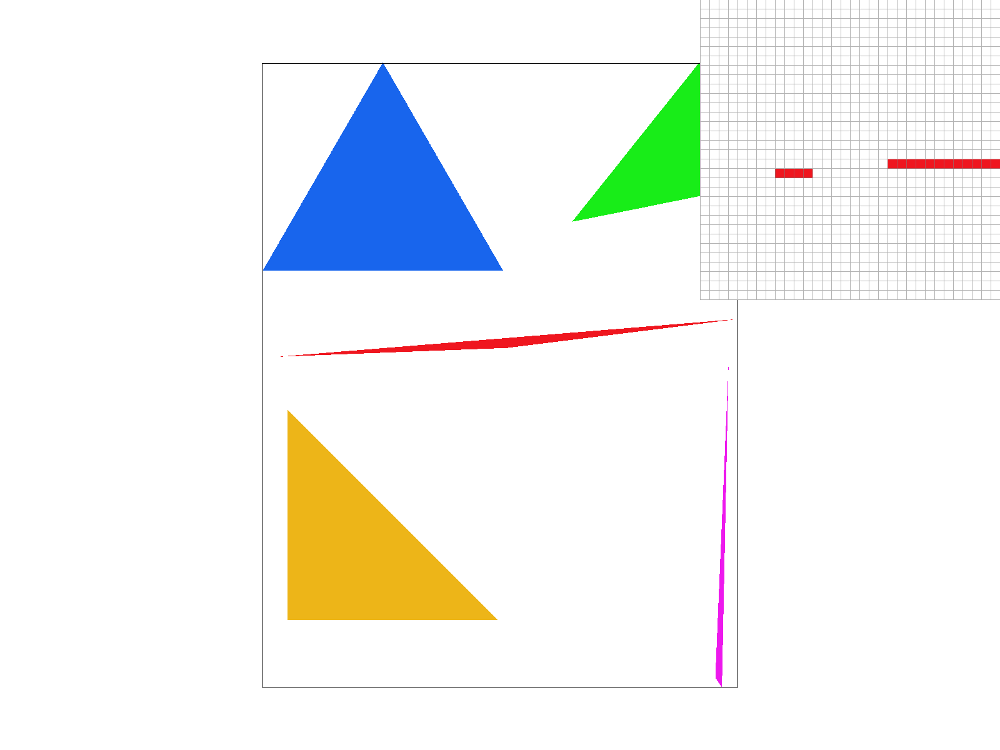
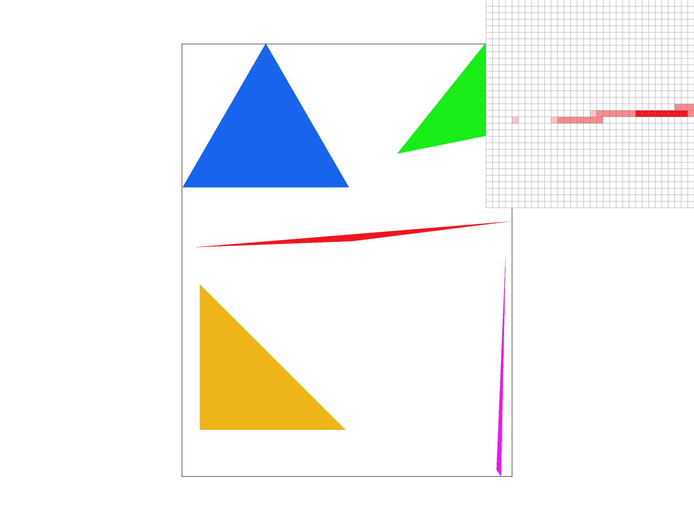
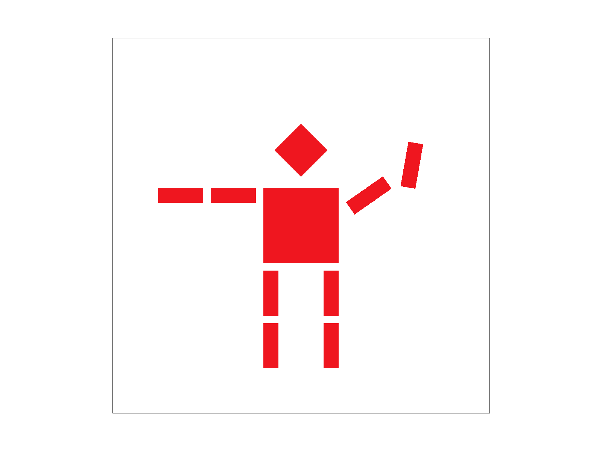
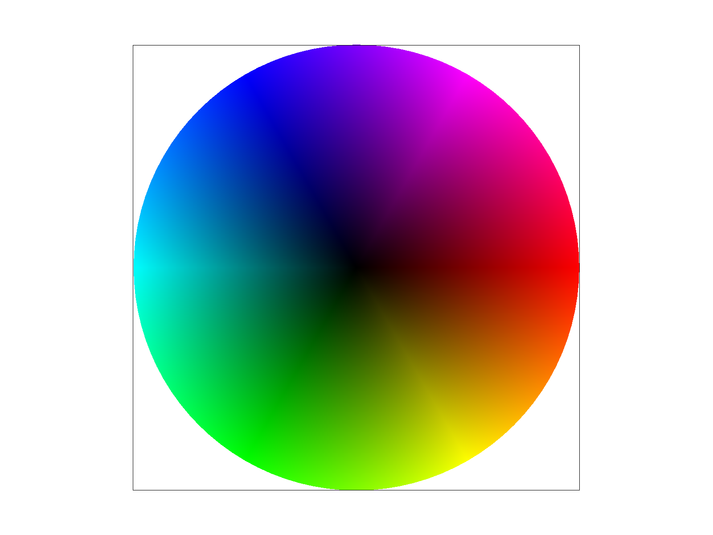
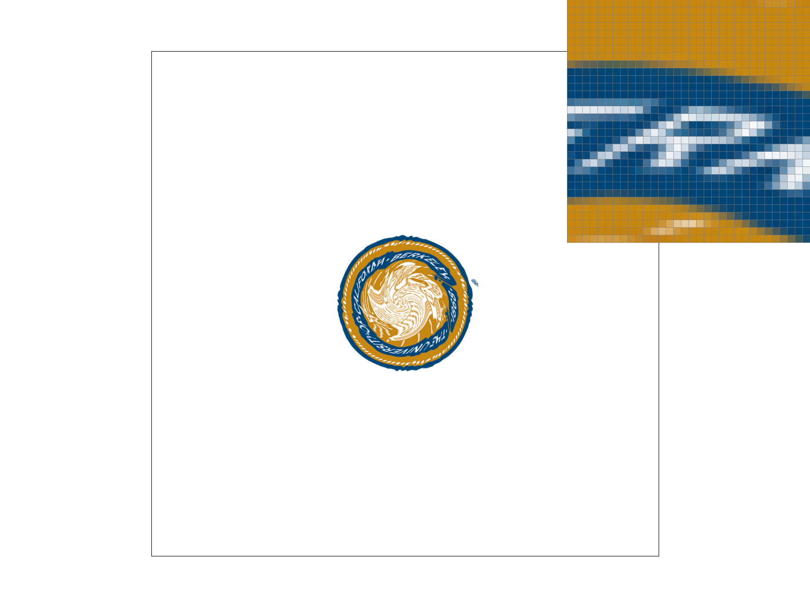

In this assignment, I built a simple rasterization pipeline capable of converting geometric descriptions into pixels displayed on the screen. Given the coordinates of triangle vertices, the rasterizer determines which screen samples lie inside each triangle and computes their corresponding colors. It then applies any transformations before finalizing the rendered image. Beyond filling triangles with solid colors, I implemented barycentric interpolation to smoothly blend vertex colors and to map image textures onto triangles using their texture coordinates.
To enhance image quality, I incorporated supersampling to minimize aliasing artifacts and jagged edges. I also experimented with different texture sampling approaches, including nearest-neighbor and bilinear interpolation, along with mipmapping techniques for selecting appropriate texture levels. These additions made a noticeable difference in reducing distortion and improving how textures appear at varying scales and distances.
A significant challenge in this project was creating and configuring a new SVG file to correctly reference and display a custom texture. While the rasterizer logic itself was functioning properly, ensuring that the SVG file was structured correctly required careful attention to XML formatting, directory structure, and relative file paths. Small mistakes, such as incorrect path references or improperly closed tags, prevented the image from rendering. Debugging these issues emphasized how sensitive the rendering process is to seemingly minor configuration details.
Overall, this project deepened my understanding of how each stage of the rasterization pipeline contributes to the final image. Every step, from coordinate handling to texture sampling, must be implemented precisely. Even small oversights can disrupt the entire rendering process, highlighting the importance of accuracy and attention to detail in computer graphics systems.
Task 1: Drawing Single-Color Triangles
To rasterize a triangle, I first compute an axis-aligned bounding box around its three vertices by taking the minimum and maximum x and y coordinates. I clamp those bounds to the framebuffer so I never iterate outside the screen. Then, for every pixel
(x,y) inside that box, I evaluate coverage using a sample located at the center of the pixel: (x + 0.5, y + 0.5).I run a point-in-triangle test using edge functions (equivalently, checking the sign of the cross product with respect to each directed edge). If the sample is inside the triangle, I fill that pixel with the triangle color using the helper function (sampling once per pixel for this part).
To ensure the triangle is rasterized correctly regardless of vertex order, I handle both clockwise and counterclockwise windings by accepting samples that are consistently on the same side of all three edges (either all non-negative or all non-positive). I also treat samples on triangle boundaries as covered, so no edges are missing.
My implementation is at least as efficient as a bounding-box approach because it only considers pixels inside the bounding rectangle of the triangle, instead of scanning the entire framebuffer. The amount of work is proportional to the box height times box width,
and for each candidate pixel it performs a constant amount of computation (a few edge-function evaluations / comparisons). This matches the standard method of checking every sample in the bounding box in both asymptotic cost and practical behavior, while
avoiding unnecessary checks outside the bounding box entirely.
Below is my screenshot of basic/test4.svg using the default view settings, saved using the S hotkey. The pixel inspector (zoom view) is centered on an interesting region along a thin edge/line, where aliasing and pixel coverage behavior are easy to see.

basic/test4.svg
Task 2: Antialiasing by Supersampling
To implement supersampling, I modified the rasterizer so that instead of taking one sample per pixel, it takes multiple sub-pixel samples
inside each pixel. These subsamples are stored in a data structure called sample_buffer, which acts as a temporary high-resolution
framebuffer. The sample rate determines how many subsamples are taken per pixel. For example, a sample rate of 4 means that each pixel is divided
into a 2 by 2 grid of subsamples. A sample rate of 16 divides each pixel into a 4 by 4 grid. For each subsample location, I run the same point in
triangle test used in Task 1. If the subsample lies inside the triangle, I store the color of the triangle in the corresponding entry of the sample
buffer. After all triangles are rasterized, I average all subsamples for each pixel in resolve_to_framebuffer() and write the final
averaged color into the framebuffer. This produces the final image displayed on screen. Supersampling helps reduce aliasing, which appears as jagged or stair-stepped
edges along triangle boundaries. With only one sample per pixel, each pixel is
either completely filled or not filled at all, which causes sharp transitions.
When using multiple subsamples, some pixels along edges may be partially covered
by the triangle. Averaging these subsamples produces smoother transitions between
the triangle and the background. In other words, supersampling allows the rasterizer to approximate how much of a
pixel is actually covered by the triangle, instead of making a simple yes-or-no
decision at the pixel center. Below are screenshots of basic/test4.svg rendered with sample rates
1, 4, and 16. The pixel inspector is positioned over a thin red triangle edge
to highlight the differences.

supersampling rate of 1

supersampling rate of 4
supersampling rate of 9
supersampling rate of 16
At sample rate 1, the triangle edges appear jagged because each pixel is either
fully colored or not colored at all. The zoom view shows sharp stair-step patterns.
At sample rate 4, some pixels near the boundary become partially covered, so their
color becomes lighter or blended with the background. This produces a smoother
edge.
At sample rate 16, the transition becomes even smoother because the coverage
estimation is more precise. The edge looks more continuous and less pixelated,
especially around thin or slanted triangle boundaries.
These results demonstrate how increasing the number of sub-pixel samples improves
edge quality by more accurately approximating fractional pixel coverage.
Task 3: Transforms
For this task, I edited the provided robot.svg to make cubeman look like he is waving.
I did this by applying hierarchical transforms to the right arm: I rotated the entire right arm group
upwards at the shoulder, and then rotated the forearm segment even more to create a waving pose.
Because the arm pieces are nested inside <g> groups, the forearm rotation happens in the
local coordinate system of the arms so it naturally moves with the upper arm and looks like a single connected motion. Overall, my goal was to create a simple pose that clearly demonstrates the effect of transforms and the
importance of applying them hierarchically to grouped objects.

Robot waving pose!
Task 4: Barycentric coordinates
Barycentric coordinates are a way of expressing the position of a point inside a triangle
as a weighted combination of the three vertices of the triangle. Instead of describing a point
using standard (x, y) coordinates, we describe it using three weights, one for each vertex.
If a point lies inside the triangle, these three weights are all non-negative and add up
to 1. Each weight represents how much influence that vertex has on the final value at
that point. Points closer to a vertex will have a larger weight for that vertex.
In rasterization, barycentric coordinates are especially useful for interpolating
attributes across a triangle. For example, if one vertex is red, one is green, and one is blue,
we can multiply each color by its corresponding barycentric weight and add them together.
The result is a smoothly blended gradient across the entire triangle.
In the example below, each vertex of the triangle has a different color (red, green,
and blue). Using barycentric interpolation, the colors smoothly blend together across
the interior of the triangle.

Barycentric interpolation!
Because barycentric coordinates provide a continuous weighting of the three vertices,
color changes smoothly from one vertex to another. Near the red vertex, the red weight
is dominant. Near the green vertex, the green weight dominates. In the center of the
triangle, all three weights contribute, producing blended colors.
This same idea can also be used to interpolate other attributes, such as texture
coordinates, normals, or depth values, making barycentric coordinates a fundamental
tool in the graphics pipeline.
Task 5: "Pixel sampling" for texture mapping
Pixel sampling is the step where we decide what color to use for a screen pixel when a texture is mapped
onto a triangle. Each pixel on the screen corresponds to a point inside the triangle, and that point
maps to a location in the texture image using the UV coordinates of the triangle. Once we know the UV
location, we sample the texture at that location to produce the final color.
In my implementation, I compute the UV coordinate at a sample point inside the triangle using
barycentric interpolation of the vertices of the triangle. Then I convert that UV coordinate into a
location in the texture (in texel/pixel space). Finally, I use either nearest-neighbor or bilinear
sampling to return the texture color at that location.
Nearest-neighbor sampling chooses the single closest texel (texture pixel) and uses its color directly.
This is very fast, but it often produces a pixelated look when the texture is magnified
or when the texture coordinates land between texels.
Bilinear sampling improves quality by blending the colors of the four surrounding texels. This creates
a smoother, more continuous appearance, especially along edges and in regions with small details.
It tends to reduce the harsh blockiness you get from nearest sampling.
Supersampling (sample rate 16) helps reduce jagged edges by taking multiple sub-pixel samples inside
each pixel and averaging them. This reduces aliasing in screen-space geometry (triangle boundaries).
However, it does not automatically fix texture blockiness caused by nearest-neighbor sampling —
that is why bilinear filtering still makes a big difference even at higher sample rates.
Below are four screenshots taken using the pixel inspector to highlight a region with sharp transitions
in the texture. Bilinear filtering produces smoother transitions and less blocky artifacts than nearest,
and higher supersampling further reduces aliasing along edges. The zoomed region contains high-frequency details
(sharp lettering and edges). With nearest sampling, small changes in UV can suddenly jump to a different texel, which creates noticeable blocky steps.
With bilinear sampling, the color changes more gradually because it blends nearby texels, which makes
the letters and edges look smoother and more natural. Increasing the sample rate helps further by
averaging multiple sub-pixel samples, reducing aliasing at triangle edges and improving the stability
of the final appearance.
nearest sampling rate of 1
nearest sampling rate of 16
bilinear sampling rate of 1

bilinear sampling rate of 16
Task 6: "Level Sampling" with mipmaps for texture mapping
Level sampling decides which resolution of the texture to sample from. When a textured triangle is
drawn smaller on the screen than the original resolution of the texture, a single screen pixel may
correspond to many texels in the texture. If we always sample from the full-resolution texture,
high-frequency detail can cause shimmering and noisy aliasing. Mipmapping fixes this by precomputing
smaller “levels” of the same texture (each level is a downsampled version). Level sampling chooses an
appropriate mipmap level based on how quickly the UV coordinates change across the screen (i.e., how
much the texture is being minified). This makes the texture look more stable and reduces aliasing
when the texture is scaled down.
In my implementation, I estimate the minification of the texture by looking at how much the UV coordinates
change from one pixel to the next (using neighboring sample positions). From this, I compute an
approximate footprint of the pixel in texture space and choose a mipmap level. With L_ZERO,
the rasterizer always samples from mipmap level 0 (full resolution). With L_NEAREST, it chooses
the single closest mipmap level to the estimated footprint. After selecting the level, the rasterizer
still performs pixel sampling at that level (either nearest or bilinear).
These techniques improve quality in different ways and have different costs. Pixel sampling (nearest
vs. bilinear) affects how we filter within a single mip level: nearest is fastest but looks blocky,
while bilinear is slightly more expensive but produces smoother results. Level sampling (mipmaps)
adds memory usage because it stores multiple downsampled copies of the texture, and it adds some work
to choose a level, but it greatly reduces aliasing when textures are minified (shrunk on screen).
Supersampling increases antialiasing power in screen space by taking multiple sub-pixel samples per
pixel and averaging them, but it is the most expensive computationally because it increases the number
of triangle/texture evaluations per output pixel; it also does not fully solve minification aliasing by
itself unless combined with mipmapping. In practice, bilinear filtering + mipmaps gives good texture
quality efficiently, while supersampling further improves edge smoothness at a higher runtime cost.
Below are four renders of my custom texture using the required combinations of level sampling and
pixel sampling. The differences are easiest to see in the pixel inspector: L_ZERO tends to show
more aliasing/noise when the texture is minified, while L_NEAREST looks more stable because it
samples from a lower-resolution mip level. Similarly, P_NEAREST looks blockier, while
P_LINEAR produces smoother transitions by blending neighboring texels.
Overall, the combination that looks the most visually stable is typically L_NEAREST + P_LINEAR,
because mipmaps reduce minification aliasing and bilinear filtering smooths within-level blockiness.